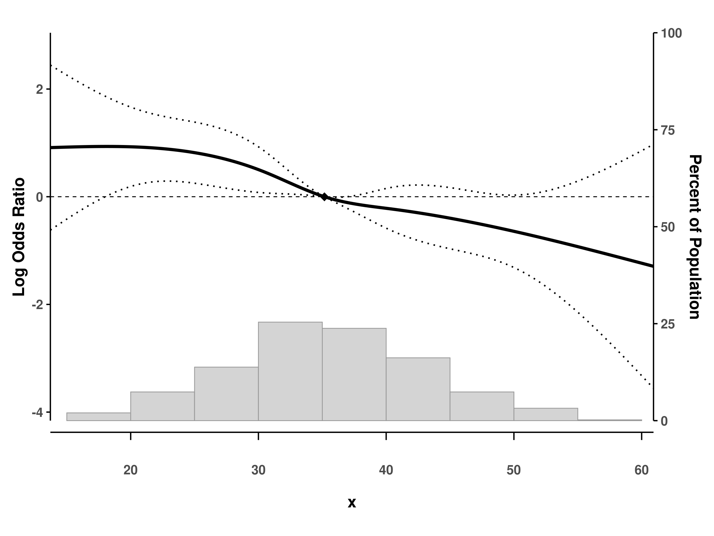
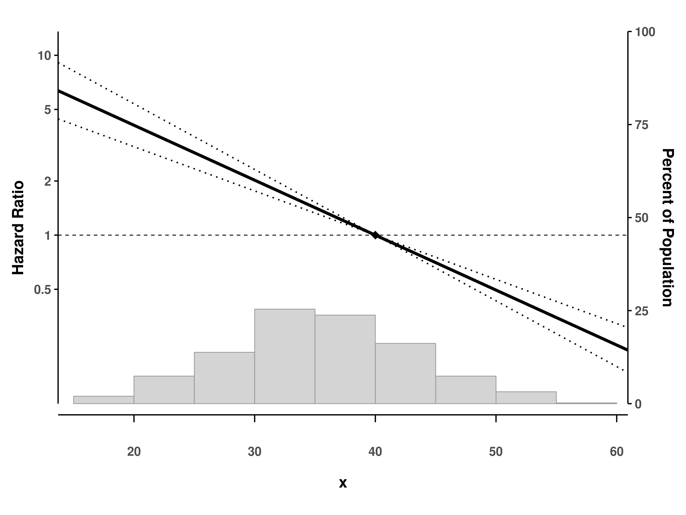

The splineplot package provides a unified interface for visualizing spline effects from GAM (Generalized Additive Models) and GLM (Generalized Linear Models) in R. It creates publication-ready plots with confidence intervals, supporting various model types including Linear, Logistic, Poisson, and Cox proportional hazards models.
Key Features
- üìä Unified visualization for spline effects across different model types
- üé® Publication-ready plots with customizable aesthetics
- üìà Automatic detection of spline terms and interaction variables
- üîÑ Support for multiple spline types: GAM smooths (
s(),te(),ti()), GLM splines (ns(),bs()), and Coxpspline() - üìâ Flexible confidence intervals: dotted lines or ribbon style
- üìä Built-in histograms showing data distribution
- üéØ Reference point marking with automatic SE = 0 at reference value
- üîÄ Interaction term support with by-variable visualization
Installation
You can install the development version of splineplot from GitHub:
# install.packages("devtools")
devtools::install_github("jinseob2kim/splineplot")Basic Usage
library(splineplot)
library(mgcv)
library(survival)
library(splines)
library(ggplot2)
# Generate sample data
set.seed(123)
n <- 500
x <- rnorm(n, mean = 35, sd = 8)
lp <- -0.06*(x - 35) + 0.0009*(x - 35)^3/(8^2)
time <- rexp(n, rate = exp(lp))
status <- rbinom(n, 1, 0.8)
binary_y <- rbinom(n, 1, plogis(lp))
dat <- data.frame(x, time, status, binary_y)GAM with Cox family
# Fit GAM Cox model
fit_gam_cox <- gam(time ~ s(x),
family = cox.ph(), weights = status, data = dat)
# Create spline plot
splineplot(fit_gam_cox, dat,
ylim = c(0.2, 2.0),
xlab = "Age (years)",
ylab = "Hazard Ratio")
#> Using 'x' as x variable
#> Using refx = 35.17 (median of x)
#> Warning: Removed 2 rows containing missing values or values outside the scale range
#> (`geom_rect()`).
#> Warning: Removed 39 rows containing missing values or values outside the scale range
#> (`geom_line()`).
#> Warning: Removed 56 rows containing missing values or values outside the scale range
#> (`geom_line()`).
#> Warning: Removed 49 rows containing missing values or values outside the scale range
#> (`geom_line()`).Logistic regression with natural splines
# Fit logistic model with natural splines
fit_glm <- glm(binary_y ~ ns(x, df = 4),
family = binomial(), data = dat)
# Create spline plot
splineplot(fit_glm, dat,
ylim = c(0.2, 2.0),
ylab = "Odds Ratio")
#> Using 'x' as x variable
#> Using refx = 35.17 (median of x)
#> Warning: Removed 2 rows containing missing values or values outside the scale range
#> (`geom_rect()`).
#> Warning: Removed 22 rows containing missing values or values outside the scale range
#> (`geom_line()`).
#> Warning: Removed 85 rows containing missing values or values outside the scale range
#> (`geom_line()`).
#> Warning: Removed 59 rows containing missing values or values outside the scale range
#> (`geom_line()`).
GAM with interaction terms
# Add a grouping variable
dat$group <- factor(sample(c("A", "B"), n, replace = TRUE))
# Fit model with interaction
fit_interaction <- gam(Surv(time, status) ~ s(x, by = group),
family = cox.ph(), data = dat)
# Plot with interaction
splineplot(fit_interaction, dat,
ylim = c(0.2, 2.0))
#> Using 'x' as x variable
#> Detected interaction with 'group'
#> Using refx = 35.17 (median of x)
#> Warning: No shared levels found between `names(values)` of the manual scale and the
#> data's fill values.
#> Warning: Removed 2 rows containing missing values or values outside the scale range
#> (`geom_rect()`).
#> Warning: Removed 139 rows containing missing values or values outside the scale range
#> (`geom_line()`).
#> Warning: Removed 116 rows containing missing values or values outside the scale range
#> (`geom_line()`).
#> Warning: Removed 128 rows containing missing values or values outside the scale range
#> (`geom_line()`).
Advanced Features
Customizing confidence intervals
# Default: dotted lines
splineplot(fit_gam_cox, dat, ribbon_ci = FALSE)
# Alternative: ribbon/shaded area
splineplot(fit_gam_cox, dat, ribbon_ci = TRUE)Log scale for odds/rate/hazard ratios
# Use log scale for y-axis
splineplot(fit_glm, dat, log_scale = TRUE)
#> Using 'x' as x variable
#> Using refx = 35.17 (median of x)
#> Warning: Removed 2 rows containing missing values or values outside the scale range
#> (`geom_rect()`).
#> Warning: Removed 1 row containing missing values or values outside the scale range
#> (`geom_segment()`).
#> Removed 1 row containing missing values or values outside the scale range
#> (`geom_segment()`).
#> Removed 1 row containing missing values or values outside the scale range
#> (`geom_segment()`).
#> Removed 1 row containing missing values or values outside the scale range
#> (`geom_segment()`).
#> Removed 1 row containing missing values or values outside the scale range
#> (`geom_segment()`).
Custom reference values
# Set custom reference point (default is median)
splineplot(fit_gam_cox, dat,
refx = 40, # Reference at x = 40
show_ref_point = TRUE) # Show diamond marker
#> Using 'x' as x variable
#> Warning: Removed 2 rows containing missing values or values outside the scale range
#> (`geom_rect()`).
#> Warning: Removed 1 row containing missing values or values outside the scale range
#> (`geom_segment()`).
#> Removed 1 row containing missing values or values outside the scale range
#> (`geom_segment()`).
#> Removed 1 row containing missing values or values outside the scale range
#> (`geom_segment()`).
#> Removed 1 row containing missing values or values outside the scale range
#> (`geom_segment()`).
#> Removed 1 row containing missing values or values outside the scale range
#> (`geom_segment()`).
Supported Model Types
| Model Type | Model Function | Spline Types | Outcome |
|---|---|---|---|
| GAM | mgcv::gam() |
s(), te(), ti()
|
HR, OR, RR, Effect |
| GLM | stats::glm() |
ns(), bs()
|
OR, RR, Effect |
| Linear | stats::lm() |
ns(), bs()
|
Effect |
| Cox | survival::coxph() |
ns(), bs(), pspline()* |
HR |
*Note: pspline() has limited support due to its internal structure. We recommend using ns() or bs() with Cox models for optimal results.
Function Parameters
| Parameter | Description | Default |
|---|---|---|
fit |
Fitted model object | Required |
data |
Data frame used for fitting | Required |
xvar |
Variable name for x-axis | Auto-detected |
by_var |
Interaction variable | Auto-detected |
refx |
Reference x value | Median of x |
xlim |
X-axis limits | Data range |
ylim |
Y-axis limits | Auto |
show_hist |
Show histogram | TRUE |
ribbon_ci |
Use ribbon CI style | FALSE |
log_scale |
Use log scale for y-axis | FALSE |
show_ref_point |
Show reference point marker | TRUE |
xlab |
X-axis label | Variable name |
ylab |
Y-axis label | Auto by model |
ylab_right |
Right y-axis label | “Percent of Population” |
Getting Help
- Documentation: Visit our pkgdown site
- Bug reports: GitHub Issues
- Questions: GitHub Discussions
Contributing
Contributions are welcome! Please feel free to submit a Pull Request. For major changes, please open an issue first to discuss what you would like to change.
License
Apache License 2.0 © Jinseob Kim / Zarathu - see the LICENSE file for details.